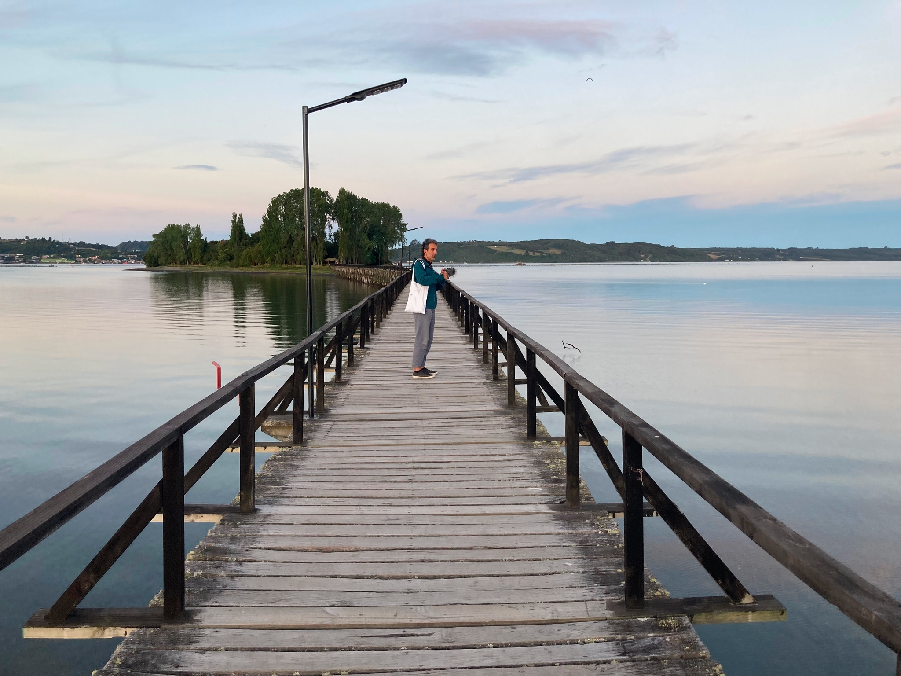

For the Christmas holidays, my wife and I spent a few weeks in her home country, Chile. We stayed in Santiago for a few days before heading south to the Puerto Varas area and the island of Chiloé.
As we've been doing during our vacations lately, this time we also brought along our gear for some field recording: a small Zoom H1n recorder with a compact windscreen for windy days.
We conducted several recording sessions, some while standing still at specific points of interest, and others while walking silently through the vegetation, admiring the landscape, and listening to the surrounding sounds (soundwalk).
As I usually do, I’ve uploaded the audio files to my favorite sound-sharing platform, freesound.org[1], in the pack Chile_24_25[2], complete with geolocation.
I choose to minimize any post-processing of the audio files: I didn’t use equalizers or adjust dynamics. I only made a few cuts here and there to remove the most evident anthropogenic noises, but I deliberately left everything else untouched. So you might hear the sounds of our footsteps - whether it’s on wooden walkways covered in dry leaves or on gravel paths. You might hear an occasional breath or even the occasional bump from my clumsy handling of the recorder. I decided to leave the recordings as intact as possible, staying true to the acoustic experience we lived through.
Here, I’ve decided to share some edited version of these files: I’ve done more cuts and a few file merges, adjusted the gain levels to make them more practical for listening, and applied a high-pass filter. I also ensured these versions work as seamless loops, so they can be played continuously in the background.
Where possible, I’ve decided to enrich the sonic narrative with some of the photographs we took during the recordings.
Enjoy these soundscapes and let me know what you think.
Recorded on January 4, 2025, at 11:00 AM.
Field-recording of natural soundscape of Puerto Varas country side. Gentle wind. Birds land and graze. At some point a tiuque[3] passes by and emits its cry. Some fast insects, passing by. Birds in flight (queltehues[4]). Birds land and graze (bandurrias[5]). In the background: a dog barks, farm machinery and lawnmowers in the distance. Highway traffic in the distance (Panamericana).
Recorded on January 5, 2025 between 14:00 and 16:00.
Sounds of local birds, wind, crackilng and stretching of tree trunks, mainly alerce. Sounds of footsteps on the wooden plank floor, dry leaves being trodden on, some breathing. You can hear the stereo panorama rotate left and right and up and down depending on the position and angle of the microphone from time to time.
Also a part of the recording is made just in front of this majestic 1600 years old alerce.
Recorded on January 6, 2025 at 19:00.
Recording of the soundscape of the Chequian seashore: water and undertow, some sea birds and insecst (coliguachos[6]) flying by.
Recorded on January 6, 2025 around 21:30
Field-recording of a soundwalk along a wooden boardwalk on a very flat beach. Various species of water and marsh birds. Light wind. A few dogs barking in the distance. Sounds of cars and traffic in the distance. Some human voices in the background. In the distance, the sound of people tinkering with metal structures can be heard.
Walking we gradually approach the island. The sounds of the undertow of the waves and the calls of the hawks (tiuque) that have their nests in the trees on the island are evident.
Recorded on January 06, 2025 around 21:40.
We now went ashore on the island of Aucar. Field-recording of a soundwalk on it. We walk on the gravel and listen to the sounds of various birds and background noises including noisy human people.
Notable points are:
Recorded on January 7, 2025 between 15:38 and 15:50
Field-recoding of the soundscape from the top of a mirador in the park. Various birds and insects. Pacific Ocean in the distance.
|
|
While strolling through the park, we stopped for a moment in the woods to listen to the song of a little bird.
Recorded on January 7, 2025 around 16:30
Pacific ocean: recording the undertow of waves at a very short distance. Feet are almost submerged in the waves spreading deeper onto the beach.
In the second part of the recording, we moved and now the pacific ocean is in proximity, feet are immersed in water: sound of the undertow and dangling of shells being washed up on the beach by the waves.Recorded on January 7, 2025 at 23:54.
Recording of the return journey by sleeping bus from Puerto Varas to Santiago.
Soundscape at night, people sleeping, noise of passing cars. Squeaks and jerks inside the bus. A door opens and closes several times.
Of the various sounds that can be heard in the recordings, here is a list of those that I have been able to identify so far:
All sounds I have uploaded here are licensed CC0 (Public Domain).
More CC0 sounds of mine on my FreeSound profile